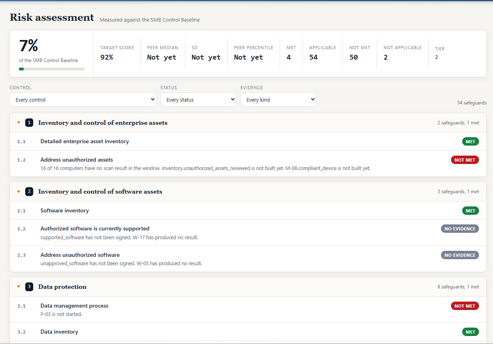
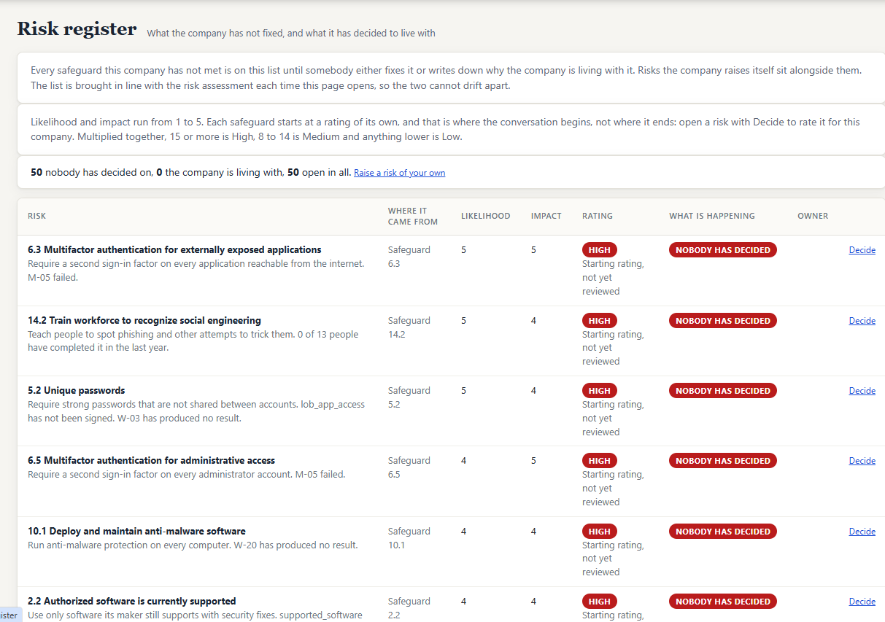
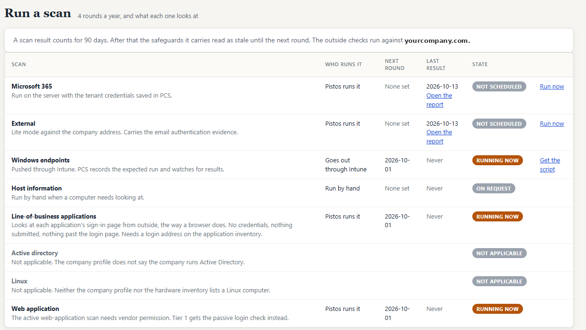
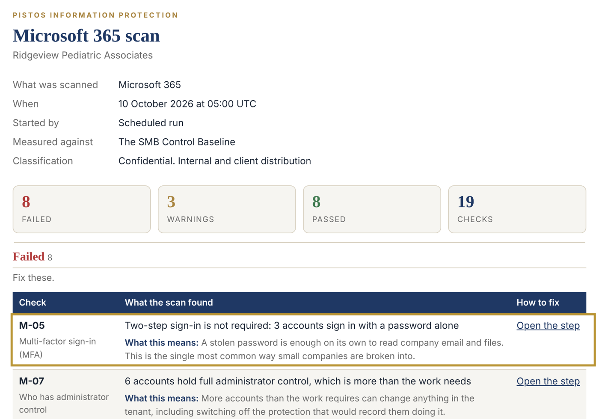
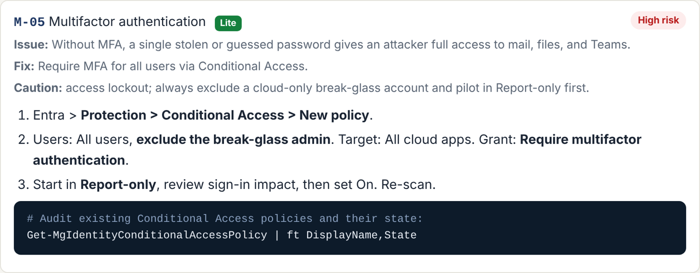
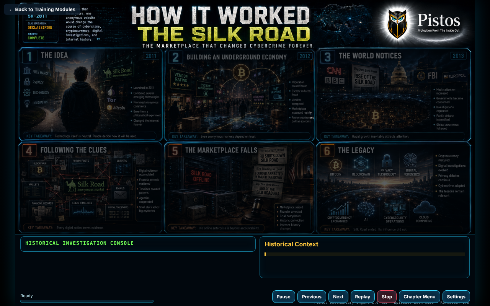

PCS Tier 1 is built for the cloud-only company: your data lives in online applications and on laptops, your staff reach it through a browser, and a lost laptop is replaced, not restored.
PCS measures you against the SMB Control Baseline, the 54 safeguards that matter for a company your size, and shows nothing that does not apply to you.
PCS Tier 1 is now live.
Three screens do most of the work: the risk assessment, the risk register, and Run a scan.
The SMB Control Baseline is built on the CIS Controls, which line up with the frameworks your regulators, carriers and customers ask about. Do the work once and it counts toward each of them.
Frameworks that include:
Every safeguard in the SMB Control Baseline, grouped by topic, each marked Met, Not met or No evidence.

Every safeguard you do not meet lands here automatically and stays until someone fixes it or writes down why the company accepts it.

Twice a year. Each scan feeds the safeguards it checks, and a result counts for 180 days before it reads as stale.

Every scan writes a report in plain English. Each failed check says what was found, what it means for the business, and carries an Open the step link to the exact instructions that fix it. Fix it, re-scan, and the safeguard turns to Met on the risk assessment.


Sample from the demo company. The same failure also lands on the risk register as safeguard 6.3, so the fix, the re-scan and the decision are tracked in one place.
Narrated, illustrated modules your people actually watch to the end, recorded against each person as evidence.

Test-drive PCS yourself for 14 days, or tell us where your data lives and we will show you your score.
Test-drive PCS Request a briefing